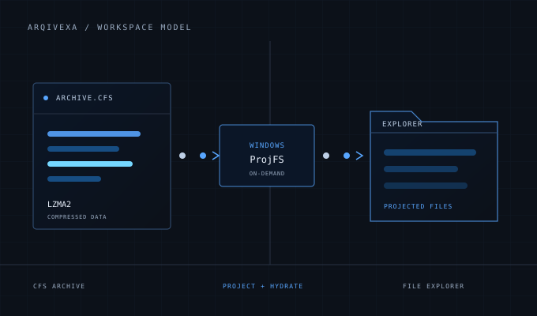

Open or create.
Use the supported Explorer workflow to create an empty archive, compress a folder, or open an existing archive. Repeated opens reuse its managed writable session.
HOW IT WORKS / 01
Windows Projected File System presents a supported .cfs archive in File Explorer. Arqivexa supplies file data when applications request it and saves supported changes back into the archive.

The archive remains a .cfs file. Explorer displays a managed workspace while Arqivexa handles projection, decompression, edits, and persistence.
Use the supported Explorer workflow to create an empty archive, compress a folder, or open an existing archive. Repeated opens reuse its managed writable session.
ProjFS lets Arqivexa present directory entries and placeholders through File Explorer without first extracting every file.
When a process reads a projected file, Arqivexa retrieves and decompresses its contents. Browsing alone does not require fully extracting every payload.
Arqivexa tracks changes in the managed session and keeps saving separate from the app’s projection layer.
Supported operations include creating and changing files in the mounted workspace. Preview handlers, indexing, memory mapping, locks, temporary files, and atomic replacement can affect compatibility.
Ordinary mounted edits are committed after a quiet period. Explicit close, discard, commit, and recovery paths remain distinct.
Arqivexa validates a candidate archive before promoting it and retains a validated predecessor across the transaction boundary, so a failed save does not silently replace a readable archive.
Before saving, Arqivexa checks archive identity to avoid silently overwriting a file that changed outside the managed session. After closing, Optimize can remove obsolete archive history.
.cfs file contains.The extension comes from the project’s former CFS name. The product is Arqivexa; the format remains distinct from other archives that also use LZMA2.
Files are compressed independently rather than in one solid stream. This supports file-oriented access; solid compression may be smaller for some similar-file collections.
The current CFS2 format stores file data in chunks up to 64 MiB and records metadata needed to rebuild the projected directory.
Edits can append changed data while obsolete versions remain. Optimize rewrites and validates a compact archive after the workspace closes.
ProjFS exposes directory entries and receives file data through a provider. It does not make arbitrary archive formats editable by itself.
Arqivexa supplies its format, decompression, metadata mapping, change tracking, validated persistence, and recovery lifecycle. It is not a block-device virtual disk or a general driver for mounting every archive format.
Writable archive support targets Windows 11 x64 and local NTFS. Arqivexa compresses files but does not encrypt them. Test unfamiliar applications with a copy and keep an independent backup.
NEXT / INSTALLATION
Setup checks for Windows Projected File System and may ask for a restart before Explorer mounting works.